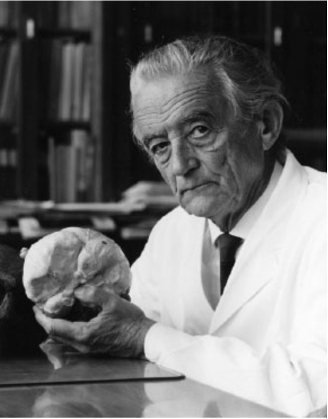

Kaiser Wilhelm Institute - Hugo Spatz

Hugo Spatz, Director of the Kaiser Wilhelm Institute
Hugo Spatz was never prosecuted and died working as a professional in the field in 1969.
Served as director of the Kaiser Wilhelm Institute for Brain Research (KWI-B) from 1937 to
1959.
Under Hugo Spatz's directorship, Kaiser Wilhelm Institute became entangled with the
Aktion T4 euthanasia program in 1938. Spatz held core responsibility for securing a
continued flow of brains from the program to the institute.
Notable Achievements and Academic Honorifics
- 1919
Credited on important studies on spinal cord histology, brain-iron distribution, and
diseases of basal ganglia as a member of the anatomical department of psychiatric
research institute in Munich under Emil Kraepelin.
- 1922
Along with Julius Hallervorden, describes what becomes known as Hallervorden-Spatz syndrome.
- 1923
Obtains habilitation in psychiatry.
- 1937
Appointed director of the Kaiser Wilhelm Institute for Brain Research in Berlin-Buch.
- 1948
Retains leading role of rebranded Kaiser Wilhelm Institute into Max Planck Institute
for Brain Research.